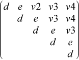

Reduces a complex Hermitian matrix to Hermitian tridiagonal form.
Syntax
call pchentrd (uplo, n, a, ia, ja, desca, d, e, tau, work, lwork, rwork, lrwork, info )
call pzhentrd (uplo, n, a, ia, ja, desca, d, e, tau, work, lwork, rwork, lrwork, info )
Description
p?hentrd is a prototype version of p?hetrd which uses tailored codes (either the serial, ?hetrd, or the parallel code, p?hettrd) when adequate workspace is provided.
p?hentrd reduces a complex Hermitian matrix sub( A ) to Hermitian tridiagonal form T by an unitary similarity transformation:
Q' * sub( A ) * Q = T, where sub( A ) = A(ia:ia+n-1,ja:ja+n-1).
p?hentrd is faster than p?hetrd on almost all matrices, particularly small ones (i.e. n < 500 * sqrt(P) ), provided that enough workspace is available to use the tailored codes.
The tailored codes provide performance that is essentially independent of the input data layout.
The tailored codes place no restrictions on ia, ja, MB or NB. At present, ia, ja, MB and NB are restricted to those values allowed by p?hetrd to keep the interface simple (see the Application Notes section for more information about the restrictions).
Input Parameters
- uplo
(global)
CHARACTER.
Specifies whether the upper or lower triangular part of the Hermitian matrix sub( A ) is stored:
= 'U': Upper triangular
= 'L': Lower triangular
- n
(global)
INTEGER.
The number of rows and columns to be operated on, i.e. the order of the distributed submatrix sub( A ). n >= 0.
- a
(local)
COMPLEX for pchentrd
DOUBLE COMPLEX for pzhentrd
Pointer into the local memory to an array of size (lld_a,LOCc(ja+n-1)).
On entry, this array contains the local pieces of the Hermitian distributed matrix sub( A ). If uplo = 'U', the leading n-by-n upper triangular part of sub( A ) contains the upper triangular part of the matrix, and its strictly lower triangular part is not referenced. If uplo = 'L', the leading n-by-n lower triangular part of sub( A ) contains the lower triangular part of the matrix, and its strictly upper triangular part is not referenced.
- ia
(global)
INTEGER.
The row index in the global array a indicating the first row of sub( A ).
- ja
(global)
INTEGER.
The column index in the global array a indicating the first column of sub( A ).
- desca
(global and local)
INTEGER.
Array of size dlen_.
The array descriptor for the distributed matrix A.
- work
(local)
COMPLEX for pchentrd
DOUBLE COMPLEX for pzhentrd
Array, size (lwork)
- lwork
(local or global)
INTEGER.
The size of the array work.
lwork is local input and must be at least lwork >= MAX( NB * ( NP +1 ), 3 * NB ).
For optimal performance, greater workspace is needed:
lwork >= 2*( ANB+1 )*( 4*NPS+2 ) + ( NPS + 4 ) * NPS
ANB = pjlaenv( ICTXT, 3, 'p?hettrd', 'L', 0, 0, 0, 0 )
ICTXT = desca( ctxt_ )
SQNPC = INT( sqrt( REAL( NPROW * NPCOL ) ) )
NPS = MAX( numroc( n, 1, 0, 0, SQNPC ), 2*ANB )
numroc is a ScaLAPACK tool function.
pjlaenv is a ScaLAPACK environmental inquiry function.
NPROW and NPCOL can be determined by calling the subroutine blacs_gridinfo.
- rwork
(local)
COMPLEX for pchentrd
DOUBLE COMPLEX for pzhentrd
Array, size (lrwork)
- lrwork
(local or global)
INTEGER.
The size of the array rwork.
lrwork is local input and must be at least lrwork >= 1.
For optimal performance, greater workspace is needed, i.e. lrwork >= MAX( 2 * n )
Output Parameters
a |
On exit, if uplo = 'U', the diagonal and first superdiagonal of sub( A ) are overwritten by the corresponding elements of the tridiagonal matrix T, and the elements above the first superdiagonal, with the array tau, represent the unitary matrix Q as a product of elementary reflectors; if uplo = 'L', the diagonal and first subdiagonal of sub( A ) are overwritten by the corresponding elements of the tridiagonal matrix T, and the elements below the first subdiagonal, with the array tau, represent the unitary matrix Q as a product of elementary reflectors. See Application Notes. |
d |
(local) REAL for pchentrd DOUBLE PRECISION for pzhentrd Array, size LOCc(ja+n-1) The diagonal elements of the tridiagonal matrix T: d(i) = A(i,i). d is tied to the distributed matrix A. |
e |
(local) REAL for pchentrd DOUBLE PRECISION for pzhentrd Array, size LOCc(ja+n-1) if uplo = 'U', LOCc(ja+n-2) otherwise. The off-diagonal elements of the tridiagonal matrix T: e(i) = A(i,i+1) if uplo = 'U', e(i) = A(i+1,i) if uplo = 'L'. e is tied to the distributed matrix A. |
tau |
(local) COMPLEX for pchentrd DOUBLE COMPLEX for pzhentrd Array, size LOCc(ja+n-1). This array contains the scalar factors tau of the elementary reflectors. tau is tied to the distributed matrix A. |
work |
On exit, work(1) returns the optimal lwork. |
rwork |
On exit, rwork(1) returns the optimal lrwork. |
info |
(global) INTEGER. = 0: successful exit < 0: If the i-th argument is an array and the j-th entry had an illegal value, then info = -(i*100+j), if the i-th argument is a scalar and had an illegal value, then info = -i. |
Application Notes
If uplo = 'U', the matrix Q is represented as a product of elementary reflectors
Q = H(n-1) . . . H(2) H(1).
Each H(i) has the form
H(i) = I - tau * v * v', where tau is a complex scalar, and v is a complex vector with v(i+1:n) = 0 and v(i) = 1; v(1:i-1) is stored on exit in A(ia:ia+i-2,ja+i), and tau in tau(ja+i-1).
If uplo = 'L', the matrix Q is represented as a product of elementary reflectors
Q = H(1) H(2) . . . H(n-1).
Each H(i) has the form
H(i) = I - tau * v * v', where tau is a complex scalar, and v is a complex vector with v(1:i) = 0 and v(i+1) = 1; v(i+2:n) is stored on exit in A(ia+i+1:ia+n-1,ja+i-1), and tau in tau(ja+i-1).
The contents of sub( A ) on exit are illustrated by the following examples with n = 5:
if uplo = 'U':

if uplo = 'L':

where d and e denote diagonal and off-diagonal elements of T, and vi denotes an element of the vector defining H(i).
Alignment requirements
The distributed submatrix sub( A ) must verify some alignment properties, namely the following expression should be true:
( mb_a = nb_a and IROFFA = ICOFFA and IROFFA = 0 ) with IROFFA = mod( ia-1, mb_a), and ICOFFA = mod( ja-1, nb_a ).